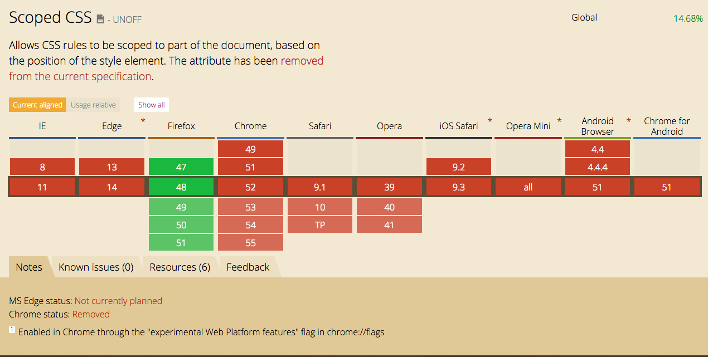
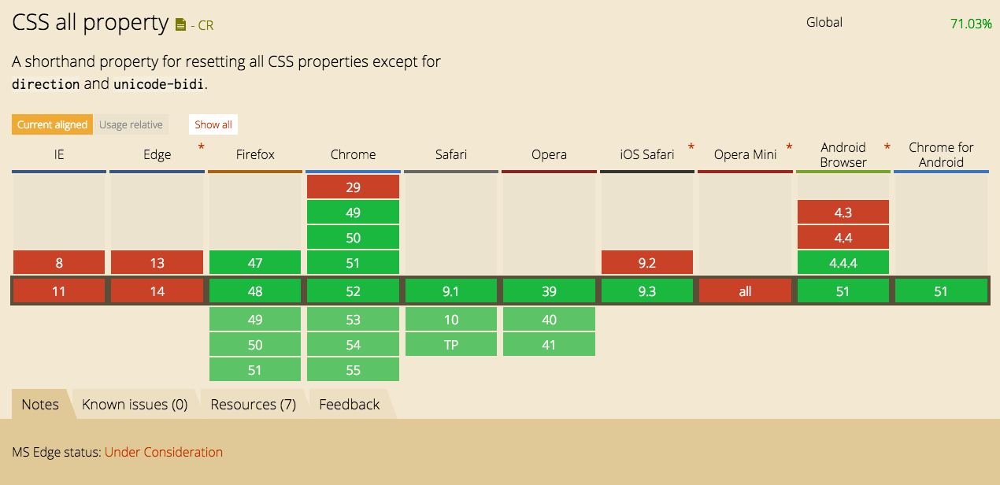
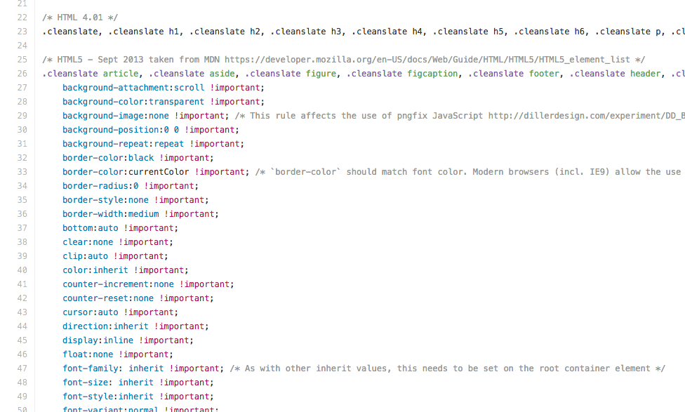
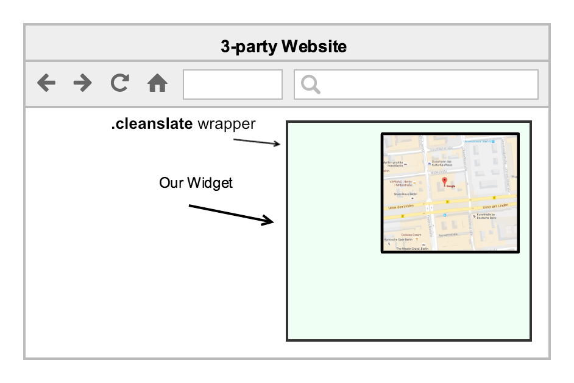
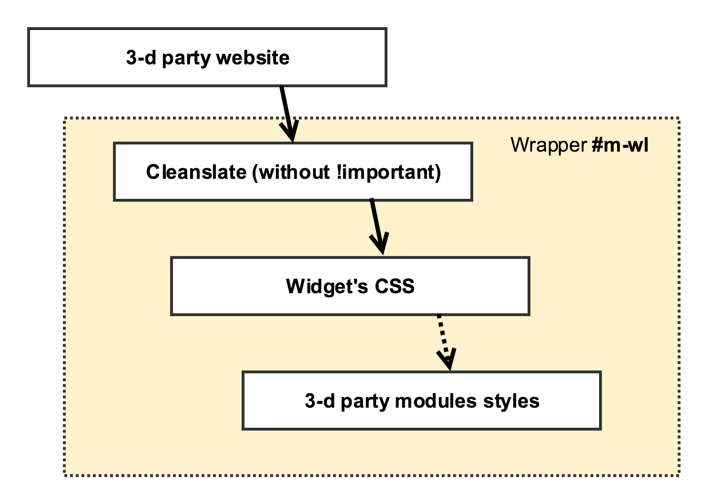

White Label project
secure your css

- Wrapp our widget inside ID
- Add !important declarations to each of our rules
- Rename our classnames
- Whatever you can think about
3-d party website styles:
button {
color: grey;
padding: 10px;
height: 30px;
}
Our styles:
#wl-wrapper button {
color: white !important;
padding: 5px !important;
}
We need to reset all CSS rules to the default values
- scoped style attribute
- CSS3 all rule
- Cleanslate - reset all rules to initial values
https://github.com/premasagar/cleanslate
scoped style rule

CSS3 all rule

Cleanslate - reset all rules to initial values
https://github.com/premasagar/cleanslate

3-d party modules

#m-wl :not(.disable-cleanslate) h1
#m-wl :not(.disable-cleanslate) h1
CSS inheritance map

CSS selectors specifity
Looks like this?

But that is actually works

Thank you :)
Grygorii Polinovskyi
@polinovskyi
polinovskyi.g@gmail.com